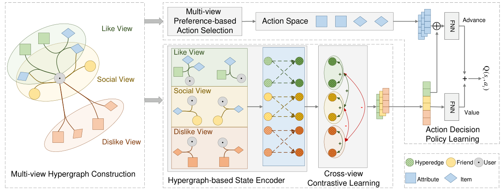

Multi-view Hypergraph Contrastive Policy Learning for Conversational Recommendation (多视图超图对比策略学习用于对话推荐)
- 会议/期刊: SIGIR 2023
- 作者与机构: Sen Zhao, Wei Wei (华中科技大学 CCIIP 实验室 & HUST-平安产险联合实验室), Xian-Ling Mao (北理工), Shuai Zhu, Minghui Yang, Zujie Wen (蚂蚁集团), Dangyang Chen (平安产险), Feida Zhu (新加坡管理大学)
- 推荐链路定位: 多轮对话式策略决策 (Ask/Recommend) + 端到端强化学习
- 研究方向: 对话推荐与智能体仿真 / 图神经网络与知识图谱推荐
- 论文原文: arxiv 2307.14024
- 开源代码: Snnzhao/MHCPL
TL;DR (1分钟核心速览)
MHCPL 针对多兴趣多轮对话推荐 (MMCR) 中偏好建模只能刻画成对关系的痛点，指出对话中的用户-物品-属性-社交关系本质是多元 (multiplex) 的：用户因属性喜/厌物品 (Like/Dislike 视图)、又与好友共享物品偏好 (Social 视图)。作者用三视图动态超图、分层超图编码与跨视图 InfoNCE 对比学习，把对话交互、物品知识与社交影响统一编码，再交给 Dueling DQN 决策 Ask/Recommend。在 Yelp 与 LastFM 模拟器基准上，Yelp 的 SR@15 相对最优基线 S*-MCMIPL 提升 18.28%，AT 缩短 5.23%，hDCG@(15,10) 提升 13.48%。
Background & Motivation (背景与核心矛盾)
- 主流范式: 对话推荐主流走 RL/图方法（CRM、EAR、SCPR），近期 UNICORN、MCMIPL 用加权图 + MDP 建模动态偏好，把用户、属性、物品节点串联成图。
- 前人局限 (1): 现有方法把对话与物品知识压缩为成对关系 (user-item / user-attribute / item-attribute)，无法表达"用户因某属性 dislike"这种"一个超边连接多个节点"的多元交互；也几乎没有利用社交关系这一强信号。
- 前人局限 (2): 社交信息整体静态引入，噪声巨大——用户好友的历史交互绝大多数与当前对话主题无关，直接聚合会污染当前偏好；同时多视图偏好简单拼接会模糊各自分布差异。
- 核心洞察 (Key Insight): 用户偏好天然可从三个正交视图刻画：Like 视图（因属性喜好的物品集合）、Dislike 视图（因属性厌恶的物品集合）、Social 视图（好友中满足当前对话的物品集合）；三者同一视图内更相似、不同视图间应保持区分，而 Like 与 Social 应相关、与 Dislike 应互斥。
- 本文切入点: 用动态多视图超图刻画三视图多元关系，按对话生成序把同视图超边依次串接，再用层级对比学习让三视图表征"分得开、连得上"。
Method (核心方法设计)
1. 整体框架 (Overall Architecture)
MHCPL 把 MMCR 建模为 MDP: \(s_t = [I_u^{(t)}, F_u^{(t)}]\)同时编码对话历史\(I_u^{(t)}\)与"当前对话筛选后的好友"\(F_u^{(t)} = \{f \mid V_f^{(t)} \neq \emptyset\}\)（\(V_f^{(t)}\)为好友可接受且满足当前对话的物品）。每个回合根据三视图构建动态超图\(\mathcal{G}_u^{(t)}=(\mathcal{N}^{(t)},\mathcal{H}^{(t)},\mathbf{A}^{(t)})\)，其中超边分 Like/Dislike/Social 三类，由分层超图编码器得到状态表征\(q_t\)与好友偏好\(\tilde{e}_f\)，Action 决策时用多视图动作选择评分筛出 Top-\(K_v\)物品与 Top-\(K_a\) 属性进入动作空间，再送 Dueling DQN 打分；训练在对比损失与 DQN 损失之间交替优化。
flowchart TD
A["对话历史 I_u^(t) + 好友集合"] --> B["三视图动态超图构建 (Like/Dislike/Social)"]
B --> C["超图消息传递 + Transformer 超边序列编码"]
C --> D["跨视图对比学习 (InfoNCE 两项)"]
C --> E["多视图动作筛 Top-K_v/K_p"]
D --> F["Dueling DQN 决策 Ask/Recommend"]
E --> F
2. 关键设计拆解 (Key Designs)
-
三视图动态超图 + 分层超图编码 (Multi-view Hypergraph + Hierarchical Encoder)：解决成对关系无法表达多元偏好。核心算子是超图消息传递 \(\Gamma = \text{ReLU}(\mathbf{A}\cdot\mathbf{A}^{\top}\cdot\mathbf{E})\)，先由节点聚合到超边\(\mathbf{H}=\mathbf{A}^{\top}\mathbf{E}\)，再经\(\ell\)层 Transformer 让同视图超边按对话生成时序交互\(\psi(\mathbf{H}_o^{l}) = \text{MHSA}_o(\mathbf{H}_o^{l-1},\ldots)\)，最后回写节点\(\Gamma^{l}=\text{ReLU}(\mathbf{H}\cdot\psi^{l}(\mathbf{A}^{\top}\mathbf{E}))\)并逐层求和得\(q_t=\sum_l \Gamma^{l}(u)\)。直觉：超图建模"一原因驱动多物品"的多元关系，Transformer 补上对话时序依赖，层数增加可引入多跳协同信号（最优\(L=2\sim 3\)）。
-
跨视图对比学习 (Cross-view Contrastive Learning)：解决多视图简单融合会抹平各视图特性与相关性的问题。用两段 InfoNCE：第一项以"同视图超边为正、异视图超边为负"保留各视图的内在判别性；第二项显式把 Like 与 Social 超边互设为正、与 Dislike 超边设为负，编码"社交同质 + 正负偏好互斥"的领域先验：
- 多视图动作选择 + 训练目标：为缓解动作空间爆炸，先按视图打分筛 Top-\(K_v\)/\(K_p\)，\(w_v^{(t)}=\sigma(e_u^{\top}e_v+\sum_{p\in P_{acc}^{(t)}}e_v^{\top}e_p+\sum_{f\in F_u^{(t)}}e_v^{\top}\tilde{e}_f-\sum_{p\in P'^{(t)}_{rej}}e_v^{\top}e_p)\)（属性打分同理），其中\(\tilde{e}_f=\sum_{v'\in V_f^{(t)}}e_{v'}\)为已筛选好友偏好。再以 Dueling 结构\(Q(s_t,a_t)=f^V_\theta(q_t)+f^A_\theta(q_t,a_t)\)+ Double DQN 与 Bellman 目标\(y_t=r_t+\gamma\max_{a_{t+1}}Q(s_{t+1},a_{t+1})\)做\(\mathcal{L}_{DQN}=\mathbb{E}[(y_t-Q)^2]\)。负采样依赖 DQN 回放缓冲区采样的回合经验；训练方式为对比损失与 DQN 损失交替优化，无显式 pairwise 负采样。推理开销主要在每回合重建超图\(|\mathcal{N}^{(t)}|\times|\mathcal{H}^{(t)}|\) 邻接，$\(L\le 3\) 时可控；动作空间 Top-10 筛选显著降低每步打分成本。
Experimental Setup & Evaluation Protocol (实验设置与评估协议)
- 数据集与预处理（采用 Zhang et al. 的 MMCR 基准，从 Yelp/LastFM 原始数据适配）：
| 数据集 | #Users | #Items | #Attributes / (Types) | #User-Item | #User-User | #Item-Attribute |
|---|---|---|---|---|---|---|
| Yelp | 27,675 | 70,311 | 590 / 29 | 1,368,606 | 688,209 | 477,012 |
| LastFM | 1,801 | 7,432 | 8,438 / 34 | 76,693 | 23,958 | 94,446 |
- 数据划分与防穿越 (Splitting Strategy): 严格遵循 MMCR 设定——每个 \((u, V_u)\) 会话抽 2 个属性部分重叠的可接受物品作为目标集，模拟器据此回答 Ask/Recommend；训练/测试按会话分隔，无对话级信息穿越。
- 排名评测协议 (Ranking Protocol): 模拟器交互式评估（无偏且非采样）；指标为 SR@5/10/15（截至第 \(t\) 回合成功推荐率）、AT（平均结束回合数）、hDCG@(15,10)（推荐列表排序质量）。
- 对比基线与超参: 规则基线 (Abs Greedy, Max Entropy)、因子分解 (CRM, EAR)、图/路径 (SCPR, UNICORN, MCMIPL) 以及作者复现的社交增强版本 S-UNICORN 与 S-MCMIPL。Embedding \(d=64\)(TransE 预训练)，学习率\(10^{-4}\)，折扣因子\(\gamma=0.999\)，每回合 Recommend\(K_v=10\)/ Ask\(K_a=2\)属性，\(L\in\{1,2,3,4\}\)；显著性\(p<0.01\)。
Key Experimental Results (实验关键数据)
1. 主实验对比 (Main Results)
| 模型 | Yelp SR@15 | Yelp AT | Yelp hDCG | LastFM SR@15 | LastFM AT | LastFM hDCG |
|---|---|---|---|---|---|---|
| Abs Greedy | 0.150 | 13.65 | 0.065 | 0.512 | 10.10 | 0.237 |
| Max Entropy | 0.390 | 12.97 | 0.117 | 0.680 | 9.34 | 0.263 |
| CRM | 0.188 | 13.99 | 0.059 | 0.372 | 12.56 | 0.130 |
| EAR | 0.240 | 12.91 | 0.094 | 0.508 | 10.08 | 0.237 |
| SCPR | 0.436 | 12.29 | 0.169 | 0.764 | 8.47 | 0.322 |
| UNICORN | 0.430 | 11.33 | 0.175 | 0.846 | 7.10 | 0.348 |
| MCMIPL | 0.522 | 11.25 | 0.184 | 0.884 | 6.87 | 0.353 |
| S*-UNICORN | 0.696 | 10.59 | 0.223 | 0.912 | 6.69 | 0.363 |
| S*-MCMIPL | 0.722 | 10.51 | 0.230 | 0.940 | 6.43 | 0.368 |
| MHCPL | 0.854 | 9.96 | 0.261 | 0.982 | 5.87 | 0.427 |
| Improv.% (vs S*-MCMIPL) | +18.28% | −5.23% | +13.48% | +4.47% | −8.71% | +16.03% |
2. 消融实验 (Ablation Study)
| 设置 | Yelp SR@15 | Yelp AT | Yelp hDCG | LastFM SR@15 | LastFM AT | LastFM hDCG |
|---|---|---|---|---|---|---|
| MHCPL 完整 | 0.854 | 9.96 | 0.261 | 0.982 | 5.87 | 0.427 |
| w/o social | 0.592 | 10.80 | 0.208 | 0.908 | 6.63 | 0.365 |
| w/o hypergraph (超图→GCN) | 0.726 | 10.68 | 0.346 | 0.938 | 6.58 | 0.382 |
| w/o contrastive | 0.762 | 10.37 | 0.237 | 0.962 | 6.17 | 0.403 |
3. 关键实验发现 (Key Findings)
- 社交视图是增益最大来源：去掉社交后 Yelp SR@15 由 0.854 掉到 0.592（−30.7%），LastFM 掉到 0.908（−7.5%），且 w/o social 仍高于原始 MCMIPL（0.522/0.884），说明对话动态筛选社交信息本身即有效——不筛直接喂社交反而在早期回合更差，佐证篇首"逐回合筛选"设计的必要性。
- 超图 vs GCN 的本质差异：把超图换成 GCN 后 Yelp SR@15 降 15.0%，说明"一属性驱动多物品"的多元关系确实无法被成对图等价表达；有意思的是 hDCG 反而从 0.261 升到 0.346——超图强化了 Ask 阶段的判别，但压缩了 Recommend 阶段的排序多样性，提示两阶段目标仍有对齐空间。
- 对比学习主要稳住 AT 而非 SR：w/o contrastive 时 SR@15 仅下降 9.2%（Yelp），但 AT 从 9.96 拉到 10.37、hDCG 从 0.261 掉到 0.237，说明对比项并非直接提升召回，而是让策略在更少回合内就产生区分性偏好——对工业场景"用户耐心有限"至关重要。层数 \(L\)上\(L=2\)显著优于\(L=1\)，\(L=4\) 在 LastFM 上因高阶噪声退化，验证"多跳有用但需控噪"。
Highlights & Limitations (亮点、对比与审稿批判)
- 与代表作对比: 相较 UNICORN（加权二部图 + 图 MDP）和 MCMIPL（在其上叠多兴趣 attention），MHCPL 的本质区别是把"成对边"升级为"超边 + 三视图"，并引入两条领域先验的对比项；相较社交推荐代表 MHCN（静态三角超图），MHCPL 的关键跃迁在对话驱动动态筛选好友——社交不是静态先验，而是随 Ask/Recommend 反馈不断重算 \(F_u^{(t)}\)。
- 可迁移亮点: (1) "属性 → 正/负物品超边"的三视图构造模板，可直接迁移到电商/新闻的属性驱动兴趣建模；(2) "同视图为正、Like-Social 为正、Dislike 为负"的双项 InfoNCE 先验，可作为多源偏好对齐的通用损失套件。
- 审稿级局限批判: (1) 模拟器生成的对话脚本、Ask 选项与奖励权重固定，缺少真人/LLM 模拟器的健壮性检验，SR 提升里有多少来自策略、多少来自仿真偏置难界定；(2) 每回合重建超图 + Transformer 超边编码，在 \(|\mathcal{H}^{(t)}|\)大时在线推理成本未做复杂度量化，工业部署代价不明确；(3) 社交视图依赖 User-User 关系网，对新用户/弱社交场景外包性弱，对比项\(\tau\)与层数\(L\) 的敏感性仅做定性曲线，未给超参搜索区间。
Rating (四维评分)
- 方法创新性 (Novelty): ⭐⭐⭐⭐ （三视图超图 + 跨视图对比双先验是对话推荐中少见的多元关系建模范式，但组件多为已有算子组合）
- 评估协议与实验扎实度 (Protocol & Experiments): ⭐⭐⭐⭐ （Yelp/LastFM 双数据集 + 自建 S-UNICORN/S-MCMIPL 社交增强对照公平，消融完整，缺真人/LLM 模拟器验证）
- 写作与数学规范度 (Clarity & Rigor): ⭐⭐⭐⭐ （超图邻接矩阵定义清晰、MDP 五要素完整，但 InfoNCE 两项与动作打分公式排版较拥挤，复杂度分析缺位）
- 工业落地与复现价值 (Industrial & Practical Value): ⭐⭐⭐⭐ （代码开源、Top-K 动作空间筛选显著降本，但超图动态重建与社交网依赖是线上化的主要工程阻力）